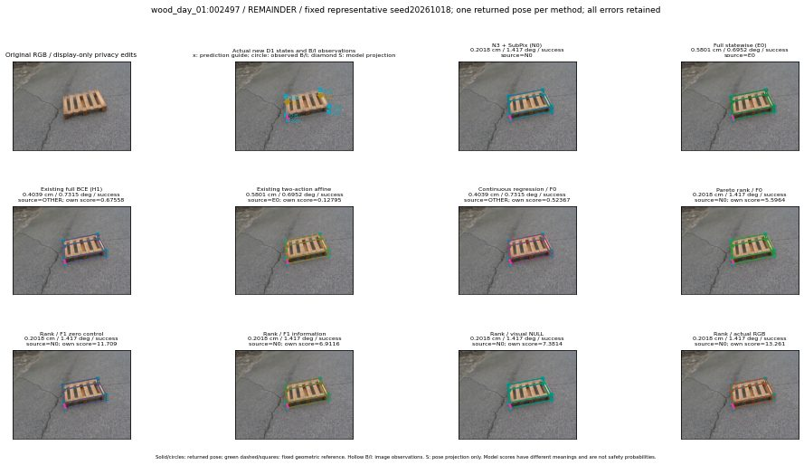

실선은 반환 자세, 초록 점선은 고정 기하 참조입니다. S는 영상 관측이 아닙니다. 점수는 모델별 의미가 다르며 보정된 안전 확률이 아닙니다. 개인정보 처리는 표시 사본에만 적용했습니다.
| 방법·seed | 위치 / 회전 / 공동성공 | 실제 출처 | 선택 후보 | 각 모델 자체 점수 |
|---|---|---|---|---|
| N0 | 0.2018 cm / 1.417 deg / success | N0 | N/A | N/A |
| E0 | 0.5801 cm / 0.6952 deg / success | E0 | N/A | N/A |
| E0_REGENERATED | 0.5801 cm / 0.6952 deg / success | E0 | E0_REGENERATED | N/A |
| POSEFIX_SUBPIX_PF_ANCHOR | 0.3585 cm / 0.8445 deg / success | OTHER | N/A | N/A |
| POSEFIX_SUBPIX_YOLO_ANCHOR | 0.3585 cm / 0.8445 deg / success | OTHER | N/A | N/A |
| D1_H1_MLP_s20261018 | 0.4039 cm / 0.7315 deg / success | OTHER | G10/ORIGINAL_WD/selected | 0.6755844354629517 |
| D1_H1_MLP_s20261019 | 0.4039 cm / 0.7315 deg / success | OTHER | G10/ORIGINAL_WD/selected | 0.6371143460273743 |
| D1_H1_MLP_s20261020 | 0.4039 cm / 0.7315 deg / success | OTHER | G10/ORIGINAL_WD/selected | 0.08200305700302124 |
| D1_H1_PAIR_MLP_s20261018 | 0.5801 cm / 0.6952 deg / success | E0 | E0_REGENERATED | -0.6747153997421265 |
| D1_H1_PAIR_MLP_s20261019 | 0.2018 cm / 1.417 deg / success | N0 | N0 | -0.4773450493812561 |
| D1_H1_PAIR_MLP_s20261020 | 0.5801 cm / 0.6952 deg / success | E0 | E0_REGENERATED | 0.025704972445964813 |
| D1_H1_PAIR_ROLE_AFFINE_s20261018 | 0.5801 cm / 0.6952 deg / success | E0 | E0_REGENERATED | 0.12795071303844452 |
| D1_H1_PAIR_ROLE_AFFINE_s20261019 | 0.5801 cm / 0.6952 deg / success | E0 | E0_REGENERATED | -0.04163752496242523 |
| D1_H1_PAIR_ROLE_AFFINE_s20261020 | 0.5801 cm / 0.6952 deg / success | E0 | E0_REGENERATED | -0.0030453428626060486 |
| R_CONT_F0_s20261018 | 0.4039 cm / 0.7315 deg / success | OTHER | G10/ORIGINAL_WD/selected | 0.5236713290214539 |
| R_CONT_F0_s20261019 | 0.4039 cm / 0.7315 deg / success | OTHER | G10/ORIGINAL_WD/selected | 0.5296299457550049 |
| R_CONT_F0_s20261020 | 0.4039 cm / 0.7315 deg / success | OTHER | G10/ORIGINAL_WD/selected | 0.5535982847213745 |
| R_ORDER_F0_s20261018 | 0.2018 cm / 1.417 deg / success | N0 | N0 | 5.596405029296875 |
| R_ORDER_F0_s20261019 | 0.2018 cm / 1.417 deg / success | N0 | N0 | 0.8696157932281494 |
| R_ORDER_F0_s20261020 | 0.2018 cm / 1.417 deg / success | N0 | N0 | 0.4876478910446167 |
| R_ORDER_F1_ZERO_s20261018 | 0.2018 cm / 1.417 deg / success | N0 | N0 | 11.708589553833008 |
| R_ORDER_F1_ZERO_s20261019 | 0.4039 cm / 0.7315 deg / success | OTHER | G10/ORIGINAL_WD/selected | 5.388236999511719 |
| R_ORDER_F1_ZERO_s20261020 | 0.2018 cm / 1.417 deg / success | N0 | N0 | 7.966546535491943 |
| R_ORDER_F1_s20261018 | 0.2018 cm / 1.417 deg / success | N0 | N0 | 6.911571502685547 |
| R_ORDER_F1_s20261019 | 0.2018 cm / 1.417 deg / success | N0 | N0 | 10.04114818572998 |
| R_ORDER_F1_s20261020 | 0.2018 cm / 1.417 deg / success | N0 | N0 | 2.11201548576355 |
| V_ORDER_NULL_s20261018 | 0.2018 cm / 1.417 deg / success | N0 | N0 | 7.381387710571289 |
| V_ORDER_NULL_s20261019 | 0.2018 cm / 1.417 deg / success | N0 | N0 | 5.258180141448975 |
| V_ORDER_NULL_s20261020 | 0.4039 cm / 0.7315 deg / success | OTHER | G10/ORIGINAL_WD/selected | 2.871628522872925 |
| V_ORDER_RGB_s20261018 | 0.2018 cm / 1.417 deg / success | N0 | N0 | 13.26088809967041 |
| V_ORDER_RGB_s20261019 | 0.2018 cm / 1.417 deg / success | N0 | N0 | 5.67262601852417 |
| V_ORDER_RGB_s20261020 | 0.2018 cm / 1.417 deg / success | N0 | N0 | -4.9317450523376465 |